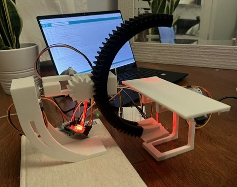

SELECTED WORK
Projects
A selection of mechanical design, automation, programming, and mechatronic systems projects. With 16-Months experience in mechanical design at Honda, I have particualrly strong skills in CAD, detailed 2d and 3d drawings and design for manufacturability. I also have experience in programming, automation, and mechatronic systems design.

Mechanical Design
HCM Grinding Robot Automation
Robot cell, tooling and equipmeny design completed at Honda of Canada Mfg.

Mechatronic System
Miniature C-Arm Fluoroscopy Simulator
A three-axis mechatronic system with an Arduino-based control system and orientation feedback.

Mechanical Design
HCM Sealer Robot
Mechanical design for a sealer robot completed at Honda of Canada Mfg.

Mechanical Design
HCM Robot Tooling and Equipment Design
Industrial manufacturing equipment and robotic handling-jig design completed at Honda of Canada Mfg.

Autonomous Mechatronic System
Autonomous Colour-Sorting Robot
A robot designed to collect, classify, and sort coloured objects autonomously for MSE 2202 at the University of Western Ontario.
A LITTLE
About Me
I am a Mechatronic Systems Engineering student at the University of Western Ontario with an interest in mechanical design, robotics, automation, and integrated engineering systems.
I enjoy working on projects that combine CAD, engineering analysis, programming, and practical problem-solving. I am particularly interested in developing designs that are functional, manufacturable, and reliable.
Outside of engineering, I enjoy spending time outdoors, especially camping in algonquin park with my family and dog.
I also enjoy playing soccer and hockey and playing guitar. One thing that matters to me is community. At school I am a big sister for the Women in Engineering club, and an orientation week leader for the faculty of engineering lovingly refered to as a 'SOPH'.
TECHNICAL CAPABILITIES GET IN TOUCH
Please feel free to connect with me to discuss my projects,
designs, any questions, or potential opportunities.
Skills
CAD and Design
Programming and Controls
Engineering Analysis
Professional Skills
Contact